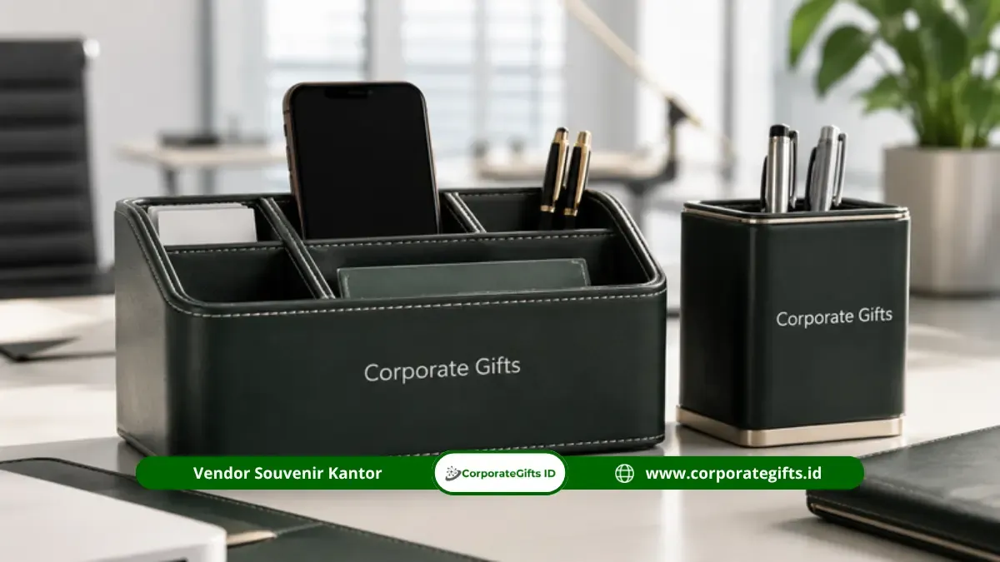

Corporate Gifts ID - Souvenir event Jakarta terbaik adalah merchandise yang fungsional, mudah dibawa, dan mampu merepresentasikan identitas penyelenggara secara profesional, seperti tumbler custom, notebook premium, tote bag, power bank, dan seminar kit.
Corporate Gifts menyediakan lebih dari 50 pilihan souvenir event Jakarta yang dapat dikustomisasi dengan logo dan dipesan dalam jumlah besar untuk seminar, gathering, workshop, konferensi, hingga acara seremonial.
Bagi panitia acara di Jakarta, urusan souvenir sering menjadi salah satu keputusan yang paling menyita waktu padahal dampaknya besar terhadap kesan acara di mata peserta.
Souvenir yang tepat bukan sekadar pelengkap, melainkan bagian dari strategi branding dan pengalaman peserta yang akan diingat lama setelah acara berakhir.
Poin Kunci Panduan Souvenir Event Jakarta:
- Ratusan Varian: Souvenir event Jakarta tersedia dalam ratusan varian produk, dari alat tulis hingga elektronik.
- Sesuai Jenis Acara: Pilihan produk sebaiknya disesuaikan dengan jenis acara: seminar, workshop, gathering, atau konferensi.
- Karakter Instansi Berbeda: Kebutuhan souvenir perusahaan, instansi pendidikan, dan instansi pemerintah memiliki karakter berbeda.
- Tier Anggaran: Budget acara menentukan tier produk yang paling relevan untuk dipesan.
- Layanan Custom Jakarta: Corporate Gifts melayani pemesanan souvenir custom untuk berbagai skala acara di Jakarta.
Apa Saja Pilihan Souvenir Event Jakarta yang Paling Diminati?
Pilihan souvenir event Jakarta yang paling diminati saat ini adalah tumbler custom, notebook premium, tote bag, power bank, dan seminar kit lengkap karena fungsional dan mudah diproduksi massal.
Kelima kategori ini konsisten menjadi andalan panitia acara karena kombinasi harga, kegunaan, dan kesan yang ditinggalkan kepada peserta.
Tumbler dan Botol Minum Custom
Tumbler stainless steel, botol minum custom, dan sport bottle menjadi primadona karena digunakan setiap hari oleh peserta, memberikan exposure branding jangka panjang jauh melampaui durasi acara itu sendiri.
Pilihan yang paling banyak dipesan meliputi:
- Tumbler stainless steel
- Tumbler dengan temperature display digital
- Botol minum custom
- Sport bottle
- Vacuum bottle
Notebook, Agenda, dan Alat Tulis
Notebook hardcover, agenda tahunan, dan pulpen metal tetap relevan terutama untuk acara formal seperti seminar dan pelatihan, memberikan kesan rapi sekaligus praktis dibawa peserta.
Varian yang paling sering dipesan antara lain:
- Notebook hardcover A5
- Agenda tahunan
- Pulpen metal
- Set notebook dan pulpen
- Sticky notes custom
Tas, Tote Bag, dan Pouch
Tote bag, canvas bag, laptop sleeve, dan gadget pouch cocok untuk acara yang melibatkan banyak materi fisik seperti goodie bag, sertifikat, atau perlengkapan seminar lainnya.
Pilihan populer di kategori ini meliputi:
- Tote bag
- Canvas bag
- Drawstring bag
- Laptop sleeve
- Gadget pouch
Merchandise Elektronik
Power bank, USB flash drive, wireless earbuds, dan USB hub menyasar audiens yang lebih modern dan tech-savvy, terutama untuk acara korporat atau startup.
Produk yang paling diminati di kategori ini:
- Power bank
- USB flash drive
- Wireless earbuds
- USB hub
- Charger dan travel adapter
Souvenir Perlengkapan Meja Kantor
Desk organizer, mouse pad, kalender meja, dan pen holder menjadi pilihan yang tepat untuk souvenir yang akan digunakan jangka panjang di lingkungan kerja peserta.
Item yang paling sering dipesan:
- Desk organizer
- Mouse pad
- Kalender meja
- Pen holder
- Desk clock
Souvenir Event Jakarta Apa yang Paling Cocok untuk Seminar dan Konferensi?
Souvenir event Jakarta yang paling cocok untuk seminar dan konferensi adalah seminar kit lengkap berisi notebook, pulpen, tote bag, lanyard, dan ID card holder karena langsung menunjang kebutuhan peserta selama sesi berlangsung.
Paket ini juga memudahkan panitia karena tersedia dalam satu kesatuan produk yang siap didistribusikan.
Untuk konferensi berskala lebih besar, kombinasi backpack, tumbler, dan notebook premium lebih ideal karena peserta biasanya membawa banyak barang dan membutuhkan tas yang representatif.
Sementara untuk pelatihan atau workshop teknis, paket seminar kit ditambah tumbler memberi keseimbangan antara fungsi dan efisiensi biaya.
| Jenis Acara | Souvenir yang Direkomendasikan |
|---|---|
| Seminar | Notebook, pulpen, tote bag |
| Workshop | Notebook, tumbler, pouch |
| Konferensi | Backpack, notebook, tumbler |
| Pelatihan | Seminar kit, lanyard |
| Gathering | Tumbler, tote bag |
Kebutuhan souvenir seminar kit di kota besar seperti Jakarta tetap tinggi seiring pulihnya aktivitas pertemuan tatap muka dan meningkatnya penyelenggaraan acara korporat di industri MICE (Meeting, Incentive, Convention, Exhibition) pascapandemi.

Kombinasi seminar kit fungsional dengan tumbler dan notebook bersampul hardcover siap cetak logo perusahaan.
Souvenir Event Jakarta Mana yang Tepat untuk Perusahaan?
Souvenir event Jakarta yang tepat untuk perusahaan bergantung pada karakter bisnisnya.
Perusahaan startup teknologi cenderung memilih merchandise modern seperti power bank dan gadget pouch.
Sementara korporasi besar lebih memilih produk premium seperti notebook eksekutif dan gift set eksklusif.
Perusahaan retail dan F&B umumnya memilih souvenir bergaya lifestyle seperti tote bag dan tumbler yang dapat digunakan sehari-hari oleh konsumen atau karyawan mereka.
Sementara perusahaan jasa dan profesional lebih memilih produk yang menonjolkan kesan rapi dan formal, seperti notebook, card holder, dan aksesori meja kerja.
Souvenir Event Jakarta Apa yang Direkomendasikan untuk Instansi Pendidikan?
Souvenir event Jakarta yang direkomendasikan untuk instansi pendidikan meliputi notebook, tumbler, tote bag, dan lanyard untuk kegiatan seminar kampus, serta backpack dan merchandise mahasiswa untuk acara orientasi maupun kegiatan organisasi kampus.
Sekolah pada umumnya memilih produk yang lebih sederhana dan edukatif seperti stationery set dan tote bag.
Pemilihan souvenir untuk institusi pendidikan sebaiknya mempertimbangkan karakter peserta yang mayoritas berusia muda, sehingga desain yang lebih dinamis dan warna yang lebih segar cenderung lebih diterima dibandingkan desain formal khas korporat.
Souvenir Event Jakarta Apa yang Sesuai untuk Instansi Pemerintah?
Souvenir event Jakarta yang sesuai untuk instansi pemerintah adalah produk dengan kesan formal dan fungsional seperti seminar kit, notebook, pulpen metal, dan tumbler untuk kegiatan sosialisasi maupun bimbingan teknis.
Untuk acara seremonial, gift set premium menjadi pilihan yang lebih representatif.
Instansi pemerintah umumnya memprioritaskan produk yang netral secara desain namun tetap memberi ruang branding yang jelas, mengingat acara-acara resmi sering dihadiri oleh berbagai kalangan dengan latar belakang berbeda.
Bagaimana Cara Memilih Souvenir Event Jakarta Berdasarkan Kebutuhan Acara?
Cara memilih souvenir event Jakarta yang tepat adalah dengan mempertimbangkan empat faktor utama: jenis peserta, fungsi produk, kesan yang ingin ditampilkan, dan anggaran acara.
Kombinasi keempat faktor ini akan menentukan kategori produk mana yang paling sesuai untuk dipesan.
Berdasarkan Jenis Peserta
Peserta korporat umumnya lebih menyukai produk premium dan fungsional, mahasiswa lebih tertarik pada merchandise modern dan kasual, sementara pejabat atau pegawai pemerintah lebih cocok dengan produk formal dan netral.
Berdasarkan Fungsi Produk
Souvenir dapat dikelompokkan menjadi produk harian, perlengkapan kerja, perlengkapan perjalanan, atau merchandise kenang-kenangan, tergantung pada bagaimana peserta akan menggunakannya setelah acara selesai.
Berdasarkan Kesan yang Ingin Ditampilkan
Beberapa acara membutuhkan kesan praktis, sementara acara lain membutuhkan kesan premium atau modern. Pemilihan warna, material, dan kemasan turut memengaruhi persepsi ini.
Berdasarkan Anggaran Acara
| Kategori | Contoh Produk |
|---|---|
| Ekonomis | Pulpen, tote bag, notebook |
| Menengah | Tumbler, pouch, seminar kit |
| Premium | Gift set, backpack, executive set |
Mengapa Souvenir Event Jakarta Penting untuk Mendukung Kesuksesan Acara?
Souvenir event Jakarta penting karena berfungsi sebagai pengingat acara, media brand exposure jangka panjang, dan nilai tambah yang meningkatkan kepuasan peserta terhadap penyelenggara.
Souvenir yang tepat memperkuat identitas acara dan membuat peserta lebih mudah mengasosiasikan pengalaman positif dengan brand atau institusi penyelenggara.
Merchandise fungsional cenderung lebih sering dipakai ulang oleh peserta dibandingkan souvenir yang hanya bersifat dekoratif, sehingga paparan brand berlangsung lebih lama dan investasi branding menjadi lebih efisien.
Lebih dari 50 Pilihan Souvenir Event Jakarta yang Bisa Dipertimbangkan
Berikut daftar kategori produk souvenir event Jakarta yang tersedia dan dapat dikustomisasi dengan logo, warna, dan kemasan sesuai identitas acara atau institusi Anda:
- Tumbler stainless steel
- Tumbler digital temperature display
- Botol minum custom
- Mug keramik berlogo
- Notebook hardcover custom
- Agenda tahunan eksekutif
- Pulpen metal grafir
- Pulpen promosi cetak logo
- Tote bag kanvas
- Canvas bag premium
- Backpack laptop
- Drawstring bag
- Laptop sleeve
- Gadget pouch organizer
- Travel pouch serbaguna
- Power bank custom
- Flashdisk kartu / swivel
- Wireless earbuds
- USB hub multifungsi
- Mouse pad ergonomis
- Desk organizer
- Pen holder meja
- Kalender meja custom
- Sticky notes memo pad
- ID card holder kulit
- Lanyard cetak sublimasi
- Card holder dompet kartu
- Keychain gantungan kunci akrilik/kulit
- Payung lipat otomatis
- Travel adapter universal
- Cable organizer pouch
- Phone stand kayu/metal
- Desk clock jam meja
- Vacuum flask bottle
- Lunch box stainless set
- Travel mug coffee tumbler
- Eco green bag spunbond
- Premium gift box
- Notebook set berkotak kado
- Pen set pulpen eksekutif
- Tumbler set berkotak exclusive
- Office stationery set
- Executive gift set
- Paket seminar kit standar
- Conference kit eksklusif
- Workshop kit interaktif
- Corporate gift set VIP
- Travel kit hygiene
- Stationery set lengkap
- Technology kit aksesoris gadget
- Wellness kit perlengkapan relaksasi
- Lifestyle merchandise kekinian
Bagaimana Menyesuaikan Souvenir Event Jakarta dengan Karakter Acara?
Menyesuaikan souvenir event Jakarta dengan karakter acara berarti memastikan produk yang dipilih selaras dengan suasana, tujuan, dan audiens yang hadir, bukan sekadar mengikuti tren produk yang sedang populer.
Acara formal seperti seminar kenegaraan atau forum resmi membutuhkan pendekatan yang berbeda dibandingkan acara komunitas atau networking santai.
Pada event korporat modern, kombinasi produk teknologi dan lifestyle cenderung lebih diterima karena mencerminkan citra perusahaan yang adaptif terhadap perkembangan zaman.
Sementara pada event pendidikan, unsur edukatif dan kepraktisan tetap menjadi prioritas utama agar souvenir benar-benar bermanfaat bagi peserta yang mayoritas pelajar atau mahasiswa.
Event komunitas dan networking memiliki karakter yang lebih personal, sehingga souvenir dengan sentuhan kreatif atau desain unik cenderung lebih diapresiasi dibandingkan produk standar korporat.
Penyesuaian semacam ini membantu penyelenggara membangun kedekatan emosional dengan peserta melalui merchandise yang diberikan.
Pertanyaan yang Sering Diajukan tentang Souvenir Event Jakarta (FAQ)
Kesimpulan
Souvenir event Jakarta memiliki cakupan pilihan yang sangat luas, mulai dari alat tulis sederhana hingga paket seminar kit lengkap.
Kunci memilih souvenir yang tepat terletak pada kesesuaian dengan jenis acara, karakter peserta, dan anggaran yang tersedia baik untuk kebutuhan perusahaan, instansi pendidikan, maupun instansi pemerintah.
Jika Anda sedang mempersiapkan seminar, gathering, workshop, konferensi, atau acara resmi lainnya di Jakarta, Corporate Gifts siap membantu menyediakan souvenir custom berkualitas dengan proses pemesanan yang cepat dan fleksibel.
Hubungi tim Corporate Gifts sekarang untuk konsultasi kebutuhan souvenir event Anda dan dapatkan penawaran terbaik sesuai skala acara.